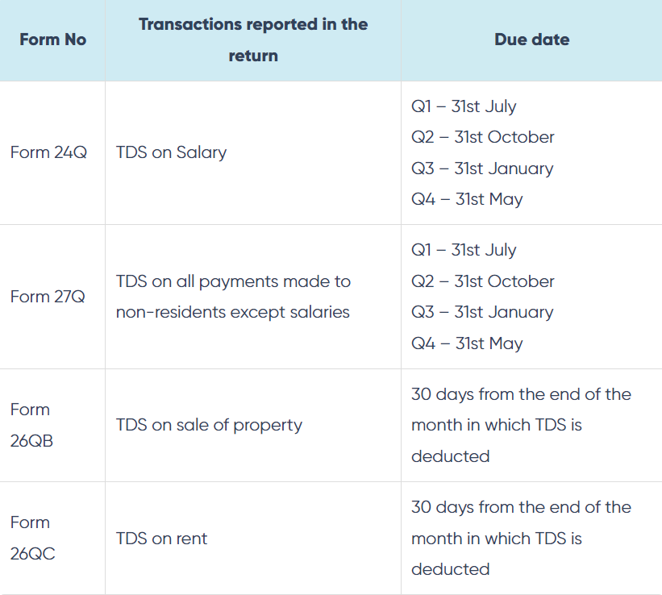

TDS(Tax Deduction at Source)
What is TDS?
TDS stands for Tax Deducted at Source. It is a system implemented by the government to collect taxes at the source of income itself. Under this system, a person or entity making certain specified payments is required to deduct a certain percentage of tax before making the payment to the recipient. The deducted tax amount is then directly deposited with the government.
An Example
Arpita Pvt Ltd make a payment for office rent of Rs 50,000 per month to the owner of the property. TDS is required to be deducted at 10%. Arpita Pvt ltd must deduct TDS of Rs 5000 and pay the balance of Rs 45,000 to the owner of the property. Thus, the recipient of income i.e. the owner of the property in the above case receives the net amount of Rs 45,000 after deduction of tax at the source. He will add the gross amount i.e. Rs 50,000 to his income and can take credit of the amount already deducted i.e. Rs 5,000 by shine Pvt ltd against his final tax liability.

Primary Purposes
KNOW THE DIFFERENCE BETWEEN TAN AND PAN:
PAN is a Permanent Account Number and TAN stands for Tax Deduction Account Number. TAN should be obtained by the person responsible to deduct TDS, i.e., the deductor. The deductor is required to quote TAN in all the documents relating to TDS. However, there is an exception- in the case of TDS on the purchase of land and building under Section 194-IA, the deductor is not required to obtain TAN and can use PAN for remitting the TDS. Also, in the case of TDS on rent as per Section 194-IB, and TDS on payment of certain sums by Individuals or HUFs as per Section 194M, the deductor can use PAN instead of TAN for remitting TDS
How and When to file TDS returns?
Filing Tax Deducted at Source returns is mandatory for all the persons who have deducted TDS. TDS return is to be submitted quarterly and various details need to be furnished like TAN, amount of TDS deducted, type of payment, PAN of deductee, etc. Also, different forms are prescribed for filing returns depending upon the purpose of the deduction of TDS. Various types of return forms are as follows: Form 26QTDS on all payments except salaries Q1 – 31st July Q2 – 31st October Q3 – 31st January Q4 – 31st May
Types